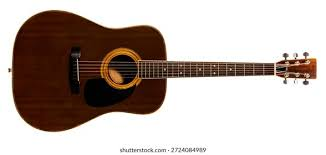
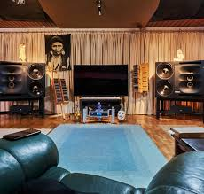

현재 음악계의 흐름을 읽고, 의미 있는 움직임과 트렌드를 짚어주는 에디토리얼
에디터스 리포트: #2026_인디_음악계의_새로운_물결

심층 분석: 상업적 차트와 자극적인 숏폼(Shorts) 음악에 피로감을 느낀 리스너들이 아날로그 감성으로 회귀하고 있습니다. 기계적인 비트 대신 통기타와 피아노 선율만으로 꽉 찬 감동을 주는 어쿠스틱 장르가 인디 씬의 주류로 다시 떠오르는 현상을 분석합니다.
▶ 주목할 트렌드 키워드: #언플러그드 #오가닉사운드 #위로의_메시지
에디터스 리포트: #시티팝의_끝없는_진화_어디까지_왔나
심층 분석: 과거 80년대의 향수를 자극하던 레트로 열풍에서 시작된 시티팝이, 이제는 세련된 현대적 R&B 및 하우스 비트와 결합하며 완전히 새로운 하위 장르를 형성하고 있습니다. 도심의 야경을 연상시키는 몽환적인 분위기의 변화를 짚어봅니다.
▶ 주목할 트렌드 키워드: #미드나잇_드라이브 #퓨처펑크 #현대적_재해석
에디터스 리포트: #나만의_방에서_시작되는_우주

심층 분석: 대형 스튜디오의 정교한 믹싱 대신, 홈 레코딩 특유의 거칠고 소박한 질감을 살린 '베드룸 팝(Bedroom Pop)'이 트렌드로 굳혀졌습니다. 뮤지션의 사적인 공간에서 탄생한 진솔한 이야기가 대중과 어떻게 내밀한 공감대를 형성하는지 탐구합니다.
▶ 주목할 트렌드 키워드: #홈레코딩 #베드룸팝 #빈티지_사운드